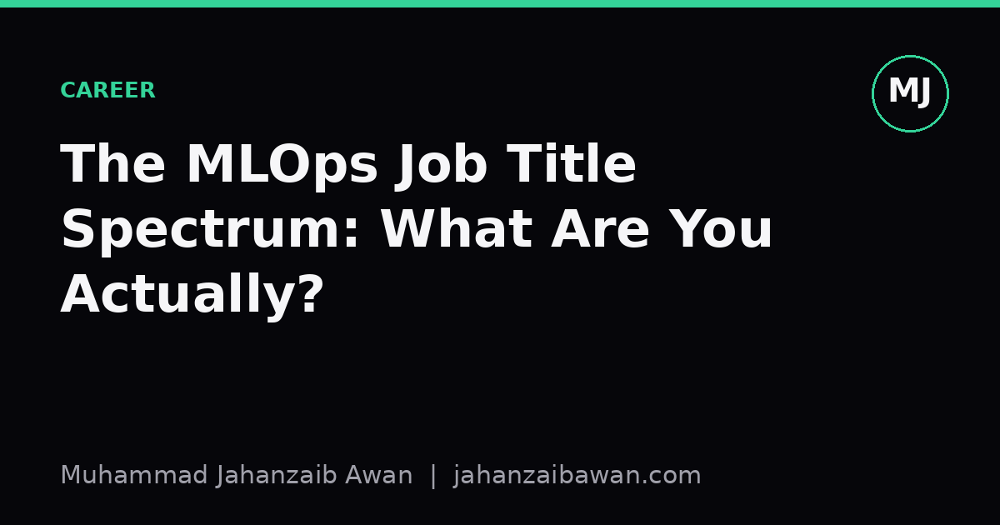

The MLOps Job Title Spectrum: What Are You Actually?
Platform engineer, ML engineer, MLOps specialist: the titles blur together, but the actual work varies enormously between companies. Here is how to read a job description properly.

Why the label stopped meaning anything
I have read job descriptions titled 'MLOps Engineer' that are almost entirely Kubernetes and Terraform, and others with the same title that expect you to retrain models and debug feature drift. 'ML Engineer' is worse: at one company it means productionising someone else's notebook, at another it means doing research-adjacent modelling work with a side of deployment. The title has stopped being a reliable signal, and if you are job hunting or trying to hire, that is a genuine problem rather than a semantic quibble.
This has happened because the field grew faster than the vocabulary for it. Ten years ago, 'data scientist' absorbed everything from SQL reporting to deep learning research, and the industry eventually split that role into several. MLOps is going through the same stretching now, except the split has not settled yet. So instead of trusting titles, I think it is more useful to look at a small number of underlying axes that actually determine what your day looks like.
The three axes that actually matter
The first axis is how close you sit to the model itself. At one end, you are choosing architectures, tuning hyperparameters, and reading evaluation metrics to decide whether a model is good enough to ship. At the other end, the model is a black box artefact that lands in a registry, and your job starts from there: packaging it, serving it, monitoring it. Someone whose week is spent comparing F1 scores across candidate models is doing fundamentally different work from someone whose week is spent writing a Helm chart, even if both have 'ML' in their title.
The second axis is how close you sit to general infrastructure versus ML-specific tooling. A platform engineer who happens to support ML workloads cares about autoscaling, networking, cost allocation, and secrets management, and the fact that the workload is a model rather than a web service is almost incidental. An MLOps specialist, by contrast, cares about things that only exist because the workload is a model: feature stores, experiment tracking, training pipelines, drift detection. These two people might share a Kubernetes cluster and attend the same standup, but their mental models of what 'good' looks like are quite different.
The third axis is ownership of the full lifecycle versus a single stage. Some roles own everything from data ingestion through to production monitoring for a given model or product. Others are specialists embedded in a larger pipeline: one team does feature engineering, another does training infrastructure, another does serving, another does monitoring, and your role is one link in that chain. Full-lifecycle ownership tends to show up in smaller companies where headcount is tight; stage specialisation tends to show up in larger organisations where the pipeline is big enough to split across teams.
Plot any job description against these three axes and the title becomes almost irrelevant. A 'Senior ML Engineer' at a fifty-person startup who owns the whole lifecycle and is close to the model is a very different job from a 'Senior ML Engineer' at a bank who sits in a platform team, far from the model, owning only the serving layer. The salary band might look similar on a job board. The actual experience of the work will not be.
A worked example of reading between the lines
Say you are looking at a posting for 'MLOps Engineer' that lists these responsibilities: build and maintain CI/CD pipelines for model training, manage a feature store, set up monitoring for prediction drift, and 'collaborate with data scientists to productionise models'. Read that carefully and you can place it on all three axes. CI/CD and feature store work put it closer to infrastructure than to modelling; the drift monitoring point puts it closer to the model than pure platform work would be; and 'collaborate with data scientists to productionise' tells you this is a stage-specialist role, not full-lifecycle ownership, because someone else is doing the modelling.
Now compare that with a posting titled 'Machine Learning Engineer' that lists: design and train models for a recommendation system, own the end-to-end pipeline from data collection to production serving, and monitor business metrics post-launch. Despite the more model-sounding title, notice how much infrastructure this actually implies: 'end-to-end' and 'production serving' mean you are also doing deployment work, just without anyone calling it that in the title. This is a full-lifecycle role sitting in the middle of the model-versus-infrastructure axis, which in my experience is the hardest role to fill well because it asks for competence in two disciplines that most people specialise in separately.
I would also flag a smaller but telling detail: how the posting talks about evaluation. A platform-leaning role will mention metrics like latency, uptime, and throughput. A model-leaning role will mention accuracy, calibration, or business KPIs tied to prediction quality. A posting that mentions both, carefully, with specific numbers attached, such as a stated latency budget alongside a stated accuracy threshold, usually indicates a team that has actually thought about the tradeoffs rather than copy-pasting a template. That is worth noticing, because it is a decent proxy for how mature the engineering culture is.
What to actually do with this
When you are reading a job description, ignore the title entirely for the first pass and map the responsibilities onto the three axes: proximity to the model, proximity to general infrastructure versus ML-specific tooling, and scope of lifecycle ownership. That single exercise will tell you more about whether you will enjoy the role than the title ever could, and it will stop you rejecting a good-fit job because the label sounded wrong, or accepting a bad-fit one because the label sounded right.
If you are on the hiring side, the same framework is useful in reverse: write the responsibilities first, place them on the axes, and only then pick a title that roughly matches convention in your market. It will not fix the industry's naming problem, but it will stop you writing a posting that promises modelling work and delivers YAML, which is a fast way to lose a new hire within the first quarter.